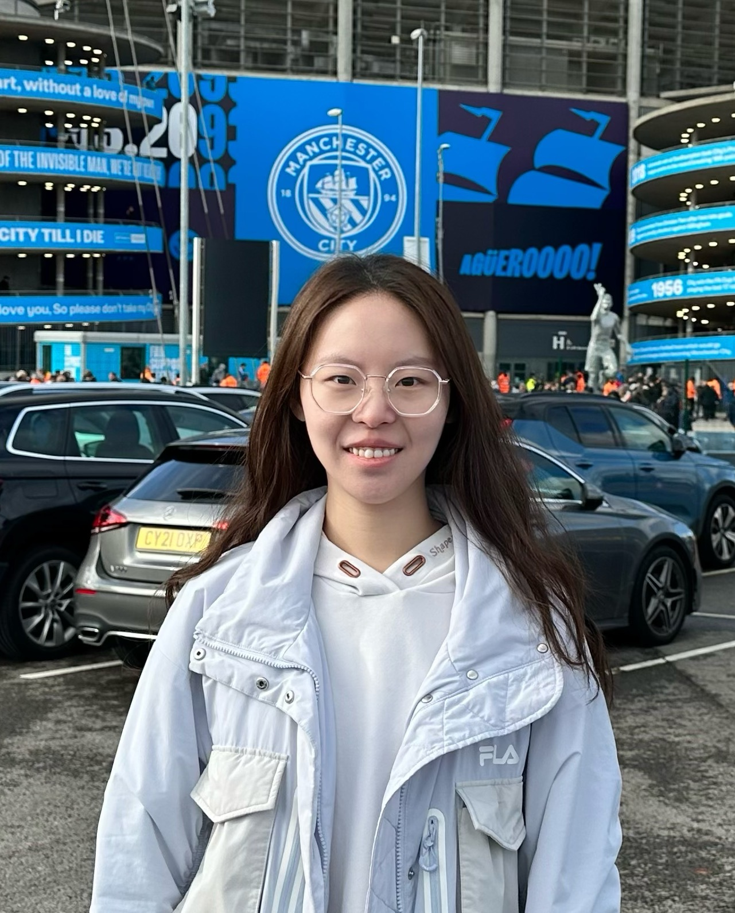

Welcome to the website for Session 01 of AIE1901 AI Exploration I at The Chinese University of Hong Kong, Shenzhen.
Course Summary
This project-based course introduces students to lifelong and adaptive AI by exploring how pretrained systems can acquire new capabilities, adjust to unfamiliar situations, and reuse past experience over time. Central to the course is the question of what it means for an AI system to learn: how can we distinguish rule execution, memorization, and generalization; and when can accumulated experience support better decisions in the future? Students will examine both the possibilities and limitations of AI systems that continue to evolve after deployment. Through a semester-long team project, students will investigate model behavior under changing data and task conditions and compare approaches for recognizing new concepts and learning across related tasks. No prior machine learning or programming experience is required.
Our class meets every Monday, 10:30am-12:20pm. Lectures meet in TA301 and labs meet in C501.
For the full learning objectives, assessment scheme, and AI-use policy, see the Course Syllabus.
For lecture slides, additional readings, and lab materials, see Course Content.
Welcome: The first class will be held on Monday, September 7, 2026.
Team projects: Students will work in groups to build and evaluate an adaptive AI system throughout the semester.
Teaching Staff
Yang Li Instructor yangl@cuhk.edu.cn

Yuqing Xia Teaching Assistant yuqingxia1@link.cuhk.edu.cn
Weekly Schedule
| Week | Date | Topic and Detailed Content | Labs & Homework | Location |
|---|---|---|---|---|
| 1 | 9/7/2026 | Introduction to Lifelong AI
| Team formation | TA301 |
| 2 | 9/14/2026 | Building a First AI Model
| Initial dataset and model | C501 |
| 3 | 9/21/2026 | Generalization and Model Evaluation
| TA301 | |
| 4 | 9/28/2026 | Distribution Shift
| C501 | |
| 5 | 10/5/2026 | Transfer Learning
| TA301 | |
| 6 | 10/12/2026 | Parameter-Efficient Fine-Tuning
| C501 | |
| 7 | 10/19/2026 | Midterm Project Presentation
| TA301 | |
| 8 | 10/26/2026 | Continual Adaptation Across Tasks
| C501 | |
| 9 | 11/2/2026 | Continual Adaptation Across Environments
| TA301 | |
| 10 | 11/9/2026 | Catastrophic Forgetting
| C501 | |
| 11 | 11/16/2026 | Continual-Learning Strategies
| TA301 | |
| 12 | 11/23/2026 | Advanced Topics and Final Project
| C501 | |
| 13 | 11/30/2026 | Final Project Development
| TA301 | |
| 14 | 12/7/2026 | Final Project Presentation
| C501 |